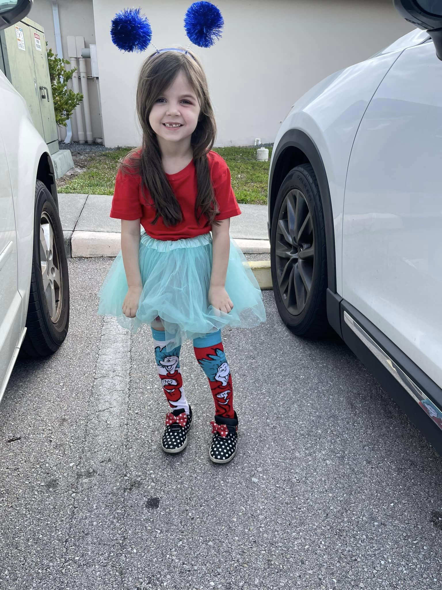
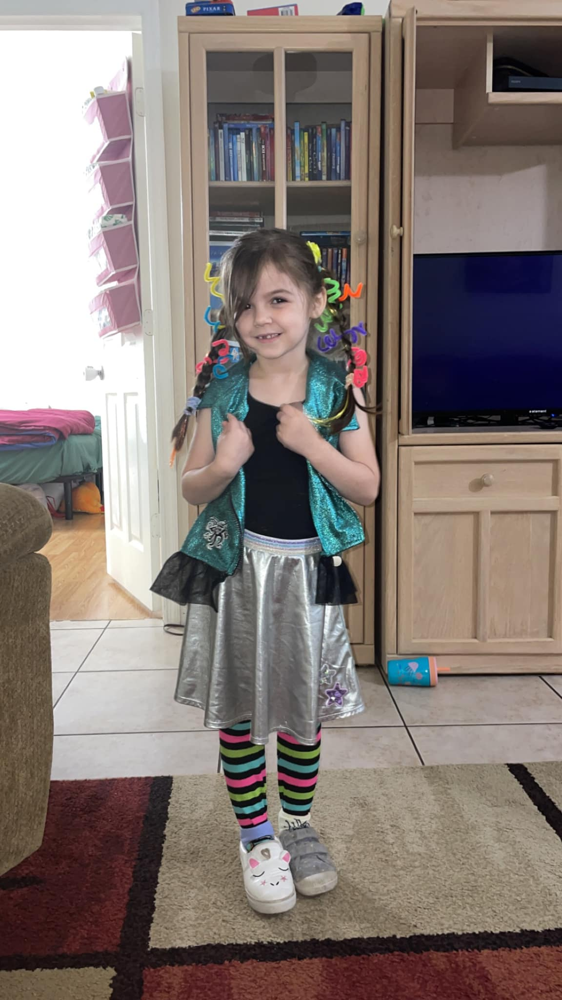
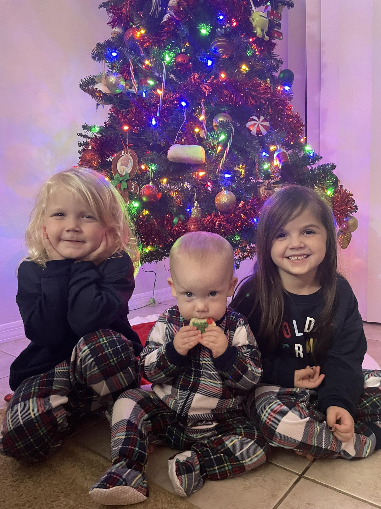

January 22, 2024,
My baby girl had Dr Seus week at her Preschool. I can not believe how big she is getting. She turns
six years old this week which is unbelievable. I love her so much and I thought I'd share with the world.


January 22, 2024,
I needed to make a website post for this cover photo. Facebook tends to have terms and conditions about using photos posted. These photos are not allowed to be
used for commercial use, they are subject to copyright.

December 4, 2023,
I have plenty of hobbies that I try to accomplish in my super limited time, but I always come back to this one. I finally have reached close to 200 updates
for the hobby project located here: Open881.

August 1, 2023,
This is my baby Evelyn, she is almost 10 months old and is so full of life. She means the absolute world to me as do my other babies.

July 30, 2023,
I created a new section all together for my blogs. This section will more than likely be my "News" section where I post things linking towards Blogs, Videos, Dreams, and more! I will more than likely post a photo in this like if it was a regular social media post and then also have it in my Albums.
April 8, 2023,
As you can see, I started a blog back in 2021 thinking that I could maintain it. I thought about keeping a new section on here all about dreams. I've been having very vivid dreams and I'd love to bring my opinions into it. You can check out my latest dream journal here: Invasion.
December 2nd, 2021,
In this blog post I demonstrate what the first blog will look like in terms of a different page but also introduce my son! Read More.
December 1st, 2021,
While this is not the most complete website and most likely will be a long work in progress I would just like to state that this
website may look funky at times. It is best viewed on desktop as I'm typing this but later will become more mobile friendly. I have
been looking for my little corner of the internet for awhile now and even though this is being hosted by GitHub, I will eventually
move this to my own server so I no longer will have to keep it a static website.
My first goals with this website is to start getting a small foundation of a Facebook-feel profile that I can use since
I really enjoy the look. It will not share the full Facebook look as I like to switch it up with my own feel at times. I am not
using this website professionally at this time and will be focusing primarily on just getting small fun things for myself
and people close to me.
This pretty much sums up my first little blog post and I will continue to post my feelings here since this is a safe place
and eventually even create an archive for all of them. This post will be the only post where it takes up the screen
since I will be making seperate web pages for you to view the entire thing. I just want this as the pinned post on the blog
and if you would like to learn a little more about me check out my about page using the links or here.